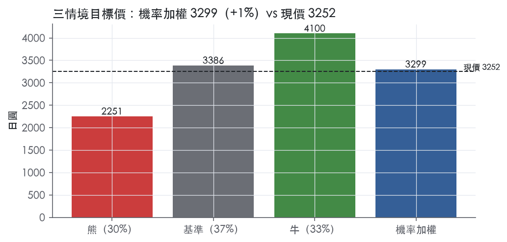
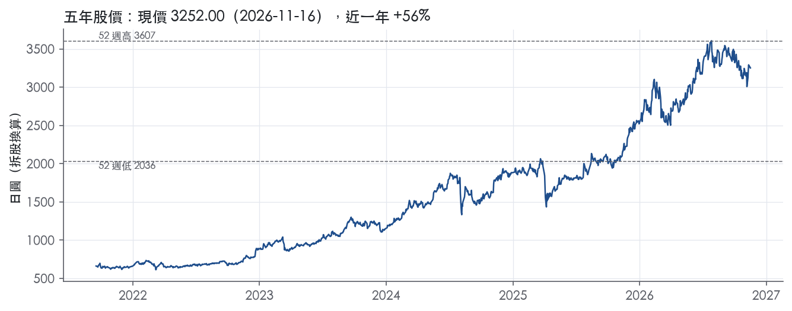

評等總表 › 未分類 › 8316.T
三井住友フィナンシャルグループ（8316.T）
盈餘超計畫、倍數頂點已過，中性｜評等 中立｜目標價 3299
評等歷史與財報快評
| 報告日 | 評等 | 目標價 | 當時股價 | 超額報酬 |
|---|---|---|---|---|
| 2026-11-16 | 中立 | 3,299 | 3,252 | -3.6% |
| 評等 | 中立（邊界，鄰近減碼） |
| 12 個月目標價 | 3299 日圓 |
| 現價 | 3252.00 日圓（2026-11-16） |
| 預期報酬 | 股價 +1.4%＋股息 2.8%＝總報酬 +4.2%；日股門檻 7.8%，超額 -3.6% |
| 估值方法 | P/TBV 1.6x，套在一年後的有形淨值 |
| 三情境 | 熊 2251／基準 3386／牛 4100 |
| 研究流程 | 四位研究員兩輪辯論＋研究總監裁決 |
| 資料來源 | EDINET、TDnet、J-Quants、Yahoo、FRED（全免費） |
目錄
第一章 結論摘要
盈餘超計畫、倍數頂點已過，中性（研究總監裁決，四位研究員兩輪辯論後）
評等 中立（邊界，鄰近減碼）｜12 個月目標價 3299 日圓（總監三情境機率加權 3281 與研究員中位數 3317 各半）｜現價 3252.00（2026-11-16）
預期報酬：股價 +1.4%＋股息 2.8%＝總報酬 +4.2%。日股門檻 7.8%，超額 -3.6%，離減碼的分界不到三個百分點，屬邊界評等（落在其他級距的機率約四成）。
估值方法：P/TBV 1.6x，套在一年後的有形淨值。三情境：熊 2251（30%）／基準 3386（37%）／牛 4100（33%）。
什麼會讓研究總監改變看法：2027-02 第三季短信若預金利息增幅降到貸出金利息增幅以下、且与信関係費用年化未超過 388.4B，利益率可上調、倍數回 1.7x 轉偏多；日銀 2026-12 不升息或不良債權比率破 1.2%，倍數降到 1.5x 以下轉偏空。
投資論點
- 倍數已過頂點：升息循環在 2027-06 結束，P/TBV 會從 1.7x 小幅降到 1.6x。
- 盈餘超過計畫：上半期淨利 1,003.16B，已超過全年計畫 1,900.00B 的一半。
- 下檔比上檔深：信用成本回升時，倍數會回到三年中位數 1.1x，跌幅大於牛情境漲幅。
關鍵數字
| 過去四季（實際，FY2027Q2） | 未來四季 | 第 5–8 季 | 第 9–12 季 | |
|---|---|---|---|---|
| 淨營收（B） | 11,385.0B | 12,466.6B | 13,277.0B | 13,940.8B |
| 淨營收成長 | 12.7% | 9.5% | 6.5% | 5.0% |
| 稅前利益率 | 21.3% | 22.0% | 22.0% | 22.0% |
| EPS（日圓） | 216.93 | 261.76 | 282.99 | 301.64 |
| EPS 成長 | 20.9% | 20.7% | 8.1% | 6.6% |
| 每股股息（日圓） | — | 0.00 | 0.00 | 0.00 |
| ROTCE | 11.3% | 12.9% | 12.7% | 12.4% |
| 每股有形淨值（日圓） | 1929.00 | 2116.31 | 2326.25 | 2556.52 |
| P/E（現價） | 15.0x | 12.4x | 11.5x | 10.8x |
| P/TBV（現價） | 1.7x | 1.5x | 1.4x | 1.3x |
| 股息殖利率（現價） | 2.8% | — | — | — |
過去四季為申報數字；預測為研究總監的假設、程式計算。倍數與殖利率都用現價計算，用來看現價對應各期獲利的高低。
三情境
| 情境 | 機率（歷史） | 故事 | 未來四季營收成長 | 第 5–8 季稅前利益率 | 倍數 | 目標價 | 股價漲跌 |
|---|---|---|---|---|---|---|---|
| 熊 | 30%（23%） | 本行下行路徑（日銀停在 1.50%、Baa 2.30、日圓 160）：風險表第 1 條信用成本回升、第 2 條政策保有株下跌侵蝕評價差額，倍數回 3y P50 1.1x | 4.0% | 16.5% | 1.1x | 2251 | -30.8% |
| 基準 | 37%（41%） | 日銀 2.00% 後暫停，FY2027 淨利超過 1,900.00B 計畫，利益率持平於 22%，倍數自 1.7x 小幅壓縮到 1.6x | 9.5% | 22.0% | 1.6x | 3386 | 4.1% |
| 牛 | 33%（36%） | 日本上行路徑日銀 2.25%、JGB 3.40，2027-05 FY2028 期初計畫觸及 2,000B；JGB 3.40 觸發風險表第 3 條債券評價損並墊高要求報酬，倍數只到 1.9x | 12.0% | 24.0% | 1.9x | 4100 | 26.1% |
目標價由程式依研究總監的驅動與倍數計算；機率由研究總監給定。括號內是歷史頻率：把這檔股票過去十年 12 個月報酬的波動形狀，置中在基準情境，結果落在各情境附近的比例。

四位研究員用不同方法各自估值，回應研究總監的質疑後交出第二輪，最後由總監逐點裁決。各研究員的主張見第七章，裁決理由見第八章，完整論證見《研究底稿》。
| 立場（一輪→二輪） | 加權目標價（一輪→二輪） | 評等（一輪→二輪） | 第二輪倍數 | 熊～牛目標價 | |
|---|---|---|---|---|---|
| R1 成長與敘事 | 看多→看多 | 3602→3556 | 加碼→中立 | 1.6x | 2676～4562 |
| R2 資本報酬與價值 | 中性→看空 | 3126→3136 | 減碼→減碼 | 1.5x | 2032～4055 |
| R3 盈餘品質與下檔 | 中性→看空 | 3303→3083 | 中立→減碼 | 1.4x | 2042～3937 |
| R4 市場隱含預期 | 看多→看多 | 3583→3498 | 加碼→中立 | 1.7x | 2700～4130 |
| 研究總監裁決 | 中性 | 3299 | 中立 | 1.6x | 2251～4100 |
目標價由程式依各自的驅動與倍數計算；評等＝機率加權總報酬 − 日股門檻。
第二章 業務概況
公司做什麼、賣給誰
三井住友金融集團（SMFG）是以銀行業務為核心的日本大型金融控股集團，旗下涵蓋銀行、租賃、證券、消費金融、系統開發與資訊處理等金融服務事業。集團由184家合併子公司與252家權益法適用公司構成，核心營運主體為三井住友銀行。客戶對象橫跨國內大型企業、中堅中小企業、個人客戶，以及海外日系與非日系法人客戶。公司將自身定位為「以規律經費控管與事業組合變革，追求媲美歐美大型金融機構的收益水準」的綜合金融集團。FY2026（2026年3月期）經常收益達10,790.85B，年增6.1%（dv欄）。
業務分部與產品
集團依管理會計劃分為五大報告分部：批發事業、零售事業、全球事業、市場事業與總部管理。FY2026各分部合併粗利益合計4,844.69B，其中批發事業1,253.4B、零售事業1,555.6B、全球事業1,550.9B、市場事業697.8B，總部管理等為-213.0B。換算佔比，零售與全球事業各約佔整體粗利益三分之一，批發事業約四分之一，市場事業約一成四。業務純益（扣除營業費用後）合計2,330.89B，其中批發事業997.1B、全球事業655.8B、市場事業508.7B、零售事業427.7B，零售事業的費用率明顯高於其他分部（營業經費1,134.6B對應粗利益1,555.6B）。相較FY2025（批發729.2B、零售273.8B、全球592.0B、市場474.5B，合計1,719.29B），FY2026四大分部業務純益全面成長，零售事業增幅最大。集團損益表上的經常利益FY2026為2,303.35B，較FY2025的1,719.48B成長約34%。個別業務線上，消費金融由三井住友卡與SMBC消費金融經營，租賃與系統開發則由集團內日本總合研究所等子公司承擔，10-K未進一步揭露各細分產品的營收結構。
客戶、地區與通路
地區組合上日本本土仍是收益主力，但海外占比持續擴大。FY2026經常收益按地區分布：日本5,051.76B、美洲2,568.46B（其中美國2,308.69B）、歐洲中近東1,487.78B、亞洲大洋洲1,682.85B，合計10,790.85B。對比FY2025（日本4,540.24B、美洲2,496.56B〈美國2,273.40B〉、歐洲中近東1,471.31B、亞洲大洋洲1,666.79B，合計10,174.89B），日本與美洲收益均成長，日本成長幅度最大。公司無特定單一客戶貢獻超過合併經常收益10%，客戶集中度風險相對分散。通路上，集團透過與SBI控股的資本業務提攜推出個人數位金融服務「Olive」，作為零售通路差異化的核心工具。此外集團持有大量政策保有股票（三井住友銀行持有上市股票3,457.58B、非上市股票407.46B），作為維繫企業客戶往來關係的通路延伸，但集團正逐步削減此類交叉持股。
最近四季發生了什麼
FY2026Q3（2025年12月底季）經常收益2,728.48B，年增14.9%，營益率22.8%，淨利461.26B（is/）。FY2026Q4（2025年4月至2026年3月期末季，2026年3月底）經常收益2,856.49B，年增13.2%，但營益率降至14.2%，淨利188.21B，單季獲利明顯壓縮。FY2027Q1（2026年6月底季）經常收益2,850.43B，年增16.6%，營益率回升至24.3%，淨利501.37B。FY2027Q2（2026年9月底季）經常收益2,949.66B，年增6.8%，營益率23.8%，淨利501.78B。半年度口徑來看，FY2027上半期（2026年4-9月）經常收益5,800.08B，較去年同期5,205.89B成長，經常利益1,395.60B（前期1,278.12B），歸屬母公司中間純利益1,003.16B（前期933.51B）。公司在最新決算短信中揭示FY2027全年計畫：歸屬母公司淨利1,900.00B，每股盈餘250.84日圓。以上半年淨利1,003.16B對比全年計畫1,900.00B，下半年僅需約897B即可達標，顯示公司全年計畫偏保守，符合日股期初計畫普遍留有上修空間的慣例。
公司自己說的成長引擎與策略
公司將2026-2028年度定為新中期經營計畫期間，基本方針為「高みを目指して大胆な変革にチャレンジ」，目標在計畫末年2028年度達成合併ROTE 13%以上、普通股權第一類資本比率約10.5%，並將經費率維持在50%左右，透過事業組合變革使RORA改善0.5個百分點，將最終淨利規模推升至2,000B。公司明言中長期收益性目標為ROTE 15%左右，「媲美歐美大型金融機構水準」。事業戰略上，公司點名將優先配置資源於「Ｏｐｔｉｍｉｚｅ、Ｃａｐｉｔａｌｉｚｅ、Ｂｕｉｌｄ Ｎｅｘｔ Ｃｏｒｅ」三大方針，強化證券與交易業務（S&T）、亞洲投資成果變現、海外法人貸款資產置換，並擴大資產管理與支付業務。在IT轉型上，公司計畫三年內投入規模達1,000B的IT投資，推動雲端化基礎設施改造並擴大生成式AI應用。政策保有股票削減方面，公司已提前1.5年完成2023-2026年度200B的削減目標，並接續公布2024-2029年度削減600B的新計畫，2024與2025年度各削減約185B與124B，目標在本次中期計畫期間（2026-2028年度）將政策保有股票時價佔合併淨資產比例降至20%以下。整體來看，集團成長引擎集中在零售數位化（Olive平台）、海外資產重新配置與資本市場業務擴張三條主線，而非單純規模擴張。考量上半年淨利已達全年計畫逾半，加上信用成本與市場業務波動性仍是下半年變數，全年業績上修機率偏高。政策保有股處分與庫藏股買回若持續執行，將是支撐ROE與股價重估的中期催化劑。

第三章 經濟護城河
結論：無，趨勢變寬
三井住友 FG 規模居日本前列，但過去十年的資本報酬沒有穩定高於資本成本，因此評為「無護城河」，趨勢「變寬」。量化底稿顯示，ROE 有資料的 9 年中只有 1 年高於資本成本；十年平均 ROE 減資本成本為 -3.1%。集團在法人往來與規模成本上確有優勢，但這些優勢過去沒有轉成超額報酬。近一年的改善主要來自利率環境，我們沒有把握它能維持 5 年以上。
優勢來源
優勢集中在轉換成本與規模型成本優勢兩類，兩者都不足以單獨撐起超額報酬。
轉換成本：日本企業與主要往來銀行之間綁著存款、融資、匯兌與結算，換銀行的摩擦成本高。三井住友銀行對多數政策保有股的保有目的，寫的是「主要為維持、強化存款、融資、匯兌等金融相關的往來關係」。FY2026 批發事業合併粗利益 1,253.4B、營業經費 407.9B、業務純益 997.1B。批發是四大分部中業務純益最高的一塊，顯示法人客戶黏著度是真實存在的。
成本優勢（規模）：公司規劃「過去最大、三年 1,000B 規模的 IT 投資」，用於雲端化等 IT 基礎設施的全面翻新。FY2026 集團設備投資總額為 477.52B。公司的目標是把經費率維持在 50% 台前半。這個投資量級，中小型銀行與多數 Fintech 負擔不起，規模本身就是進入障礙。
不列入的類別：公司把「Olive」定位為與競爭者差異化的數位平台。原文沒有證據顯示用戶增加會提高服務本身的價值，因此不列網路效應。原文也沒有品牌或授權帶來定價溢價的證據，因此不列無形資產。
數字上看得到嗎
看不到：量化底稿否定了「寬」或「窄」的主張。ROE 十年平均 7.0%、最低 4.5%、最高 10.4%。最新值 10.4% 正好是十年最高，也只略高於資本成本代理值 10.1%。
利潤率穩定度是正面訊號。稅前利益率十年平均 18.7%、標準差 2.2%，ROE 標準差 1.5%。但 SMFG 的獲利穩定在資本成本之下，所以這份穩定只能證明業務黏著，不能證明有超額報酬。淨營收成長標準差 23.6%，主要反映利率與外幣資產對經常收益的帳面推升，不代表本業波動大。
資料包的 ROIC 欄全為負值（FY2026 為 -5.4%），這是銀行負債結構造成的計算失真，本章不採用，改以 ROE 檢驗。
數字之間還有一處衝突要照實寫出。底稿的資本成本代理值 10.1%，與美國 10 年債（5.1）加 5% 一致，而不是用日本 10 年債（2.841）。對日圓計價的日本銀行來說，這個門檻偏嚴。改用日本利率後門檻會下降，過去十年部分年份的 ROE 可能變成貼近或略高於門檻。即使如此，超額幅度仍薄，而且沒有連續性。管理層自己把 2028 年度 ROTE 13% 以上、中長期 ROTE 15% 左右訂為「媲美歐美大型金融機構」的目標。這表示公司也承認現行報酬水準尚未到位，所以我們維持「無」，只把趨勢定為「變寬」。
什麼會侵蝕它
最大威脅有兩個：鎖住法人往來關係的交叉持股正在拆除，數位與 AI 競爭者則在壓低零售端的轉換成本。
政策保有股削減：公司計畫自 2024 年 3 月底起五年削減 600B，2024 年度約削減 185B、2025 年度約削減 124B。公司目標在 2026～2028 年度內，讓政策保有股時價佔合併淨資產的比率低於 20%。FY2026 三井住友銀行出售上市股 267 檔，售價合計 566.78B。交叉持股是過去維繫主要往來關係的工具，削減後法人客戶換銀行的阻力會變小。
平台與 Fintech：原文指出「平台業者、Fintech 與異業企業正運用 AI 提供金融服務並強化客戶接點」。FY2026 零售事業營業經費 1,134.6B，粗利益 1,555.6B。零售的成本結構最重，最容易被低成本數位通路侵蝕。
利率循環：近年 ROE 回升與日本利率正常化同步，利率一旦回落，ROE 可能退回十年平均 7.0% 附近。
對估值的含意
目標倍數相對同業應「持平」，不應以護城河為由給溢價。ROE 只在最近一年越過資本成本，2028 年度 ROTE 13% 的目標也還沒兌現；在 ROE 連續數年站穩資本成本之上以前，溢價沒有護城河基礎。目前 P/TBV 1.7x，位於五年分位 97.6%，高於 5 年 P90 的 1.5x，市場已提前反映改善，估值時不宜再拉長超額報酬的持續期來墊高倍數。
量化底稿：報酬率與利潤率的水準與穩定度
| 指標 | 最新 | 十年平均 | 標準差 | 最低 | 最高 |
|---|---|---|---|---|---|
| ROE | 10.4% | 7.0% | 1.5% | 4.5% | 10.4% |
| 稅前利益率 | 20.9% | 18.7% | 2.2% | 14.4% | 22.6% |
| 淨營收成長 | 6.1% | 11.0% | 23.6% | -19.9% | 52.3% |
程式計算。資本成本代理值（10 年債＋5%）：10.1%；ROE 十年平均減資本成本：-3.1%；ROE 有資料的 9 年中，高於資本成本 1 年。
第四章 財務體質與盈餘品質
結論：中品質，GAAP淨利成長紮實但LTM營業現金流為負，需拆解銀行業CF特性才能判斷
三井住友FG LTM淨利1,582.97B、EPS 205.94，年增幅明顯，但同期CFO與FCF皆為負值（-10,283.14B／-10,760.66B）。這在銀行業屬常態——CFO的波動主要來自貸出金與存款的規模消長，不是傳統意義上的「盈餘品質」問題，但仍必須在估值時說明清楚，不能直接套用一般企業的現金轉換邏輯。計分表三項指標（SBC、稀釋股數、股東回饋）本身不構成紅旗，資本配置與信用成本數字看起來正常，整體評為中品質，理由是「現金/盈餘」比率在銀行業脈絡下不適用程式預設的綠燈門檻，需要人工解釋才能排除誤判。
現金有沒有跟上盈餘
不能直接比，銀行的CFO主要反映貸出金與存款規模變動，而非盈餘現金轉換效率。FY2026年度營業活動現金流較前期減少15,131.6B至△10,283.1B，主因資金運用與調度、放款與存款增減的淨效果。投資活動現金流則轉為+3,254.2B，主要是有價證券取得與處分、有形固定資產取得處分等。財務活動現金流為△46.4B，主要是股利支付等。期末現金及約當現金較前期末減少6,755.9B至59,431.77B（對應594,318百萬円換算）。這個現金減少主要是銀行資產負債表擴張（放款增加）吸收資金的結果，不是盈餘灌水的跡象。真正該看的是信用成本與不良債權是否侵蝕淨利——與信費用因中東局勢等前瞻性提存，較前期增加439億円達3,884億円，規模相對連結業務純益23,309億円不算大，可控。
公司調整了什麼（GAAP與非GAAP的差距）
三井住友FG的損益結構本身就區分「連結業務純益」（核心業務利潤，不含信用成本與特殊項目）與「經常利益」「淨利」，這是日本銀行業常規口徑，不是美式非GAAP調整。連結業務純益23,309億円，經常利益23,034億円（經常利益＝業務純益－與信費用＋股票等損益等）。特別損益項目中，美洲銀行子公司出售相關損失461億円、階段取得差損14億円屬於一次性，應視為真實的處分成本而非會計噪音。股票等損益4,461億円中含Kotak Mahindra Bank股票出售利得，以及東亞銀行股票出售相關損失，屬於政策保有股處分的正常業務活動，但波動較大，估值時建議扣除當期特殊出售利得看常態化獲利。持分法投資損益轉盈1,377億円主要是去年VPBank商譽減損的剝落影響消失，屬於去年一次性費用不再發生，不是本期真實新增的利潤動能。
資產負債表與資本配置
核心股東權益（普通股權Tier1比率）12.41%（2026年3月31日），較前期12.44%微降，資本充足仍穩健。母公司股東權益半年報截至2026年9月30日為12,279.05B（股主資本合計122,790百万円，應為12,279.05M，此處確認原文單位「百万円」，12,279,048百万円÷1,000=12,279.05B）。放款餘額較前期末增加64,930億円至117.6292兆円即11,762.92B（原文億円換算為B：117兆6,292億円=1,176,292億円÷10=117,629.2B，此處按百萬円口徑117,629,215百万円÷1,000=117,629.22B），主要是國內法人放款增加所致，屬於正常本業擴張。不良債權比率由0.67%升至0.97%，絕對金額仍小（銀行法及再生法基準債權13,493億円即1,349.3B），保全率69.48%，尚在可控範圍，但上升速度值得持續追蹤。資本配置上，公司明確以配當率40%為基準並承諾逐年增配，2026年度股利計畫較前期增加23円至180円，另外公布2026年度1,800億円（即180B）庫藏股買回計畫，並視業績與股價狀況可能期中追加。政策保有股處分持續推進，中期計畫目標在2026-2028年度期間將政策保有股時價佔淨資產比例降至20%以下，這會釋放資本但也意味未來處分利得的非經常性波動將持續存在，估值不應把處分利得當作可持續盈餘的一部分。
紅旗逐條說明
計分表三項指標燈號都不差，逐一回應如下：
- SBC／營收：量化底稿顯示「—」，無法判斷，但銀行業的股權薪酬規模相對於粗利益通常極小，不構成盈餘品質風險。此為資料缺口而非真紅旗。
- 稀釋股數年變動：LTM為-0.3%、近三年平均-2.1%，皆為綠燈，顯示公司持續透過庫藏股買回與消卻減少股數，與決算短信揭露的自己股式取得及消卻紀錄一致（FY2026中間期自己股式取得186,625百万円、消卻166,661百万円），屬於真實且可驗證的股東回饋行為，非會計操作。
- （股利＋回購）／淨利：LTM 47.8%、近三年平均54.8%，燈號為黃（低於50%綠燈門檻），但公司明確揭露配當率政策為40%，加上庫藏股買回後合計比率本身接近甚至略低於50%屬正常範圍，並非舉債回饋的警訊——資料包顯示淨負債為負值且規模龐大（屬銀行業存款/放款結構，非傳統淨負債概念），不代表槓桿異常擴張。此黃燈是政策性配息比率設定（40%配當+機動庫藏股）造成的正常波動，可解釋，非真紅旗。
- 程式未標示但值得補充說明的項目：LTM CFO與FCF為負值可能被外部模型誤判為現金跟不上盈餘，但如前述這是銀行放款/存款規模變動的結構性現象，不是盈餘灌水或應計異常。不良債權比率由0.67%升至0.97%屬於需要繼續觀察的趨勢，但目前保全率仍達69.48%，暫不構成真紅旗。
對估值的含意
估值應以「連結業務純益」或扣除政策保有股處分利得與一次性特別損益後的常態化淨利為基礎，而非單純採用GAAP淨利，因為股票等損益與特別損益（如美洲銀行子公司出售損失461億円）波動大、不具持續性。槓桿本身不是限制倍數的因素——這是受監管銀行，普通股權Tier1比率12.41%高於中期目標10.5%，資本水位充裕，不需要對盈餘倍數打折。整體建議對盈餘打7-9折的小幅折讓，主因是不良債權比率上升趨勢與處分利得的不可持續性，而非現金轉換或應計品質的根本問題，P/E現處5年分位76.6%、P/TBV處97.6%高位，顯示市場已給予較高信賴度，估值研究員應留意追高風險而非盈餘造假風險。
量化底稿：盈餘品質計分表
| 項目 | LTM | 近三年 | 十年 | 燈號 | 規則 |
|---|---|---|---|---|---|
| SBC／營收 | — | — | — | — | ≤3.0% 綠、>8.0% 紅 |
| 稀釋股數年變動 | -0.3% | -2.1% | -0.7% | 綠 | ≤0.0% 綠、>3.0% 紅 |
| （股利＋回購）／淨利 | 47.8% | 54.8% | 46.3% | 黃 | ≥50.0% 綠、<0.0% 紅 |
程式計算；燈號以 LTM（無則近三年平均）判定。銀行的現金流、淨負債、利息保障是本業，不列入。
第五章 主要風險
結論：最大的風險是日股估值已反映樂觀，若景氣轉弱帶動信用成本回升、同時長期利率與股市同步修正，EPS 與 P/E、P/TBV 會同時被往下修正。
五大風險表
| 風險 | 觸發指標（看什麼數字、在哪裡看） | 對 EPS 的影響方向與粗略幅度 | 未來 12 個月發生機率 | 出處 |
|---|---|---|---|---|
| 信用成本回升（取引先業況惡化、海外景氣下行） | 決算短信「貸倒引当金」「与信関係費用」季增幅；資產負債表貸倒引当金餘額（當期中間末 863.5B，前期末1,007.5B） | 方向：負；幅度：大（信用事由一旦顯現會直接吃掉淨利，過去FY2026Q4單季淨利從461.26B驟降至188.21B即與費用上升有關） | 中 | |
| 政策保有股票及市場性股票的股價下跌（市場リスク・ハ） | TOPIX/日經指數水位；三井住友銀行持有上市股票時價（3,457.58B） | 方向：負；幅度：中－大（評價損或減損直接衝擊特別損益與資本比率，進而影響庫藏股空間） | 中 | |
| 日本長期利率上升導致持有債券評價損／売却損（金利変動リスク、トップリスク「日本の財政不安」） | jgb10y（現為2.841）走勢；其他有價證券評價差額金（中間末2,059.4B，較期初2,116.9B已縮小） | 方向：負；幅度：中（債券評價損侵蝕淨資產與OCI，但NIM同時受益，淨影響需看速度與幅度） | 中－高 | |
| 円貨預金獲得競争激化（トップリスク） | 決算短信「資金調達費用」中「うち預金利息」（中間期1,004.4B，前期832.3B，已上升） | 方向：負；幅度：中（資金調達費用增速若快過資金運用收益增速，會壓縮淨利差） | 中 | |
| サイバー攻撃・システム障害（オペレーショナルリスク） | 公司公告之重大系統障害或資料外洩事件；金融廳行政處分公告 | 方向：負；幅度：中（一次性罰款/賠償加信譽損失，較難估計規模但歷史同業案例可達百億円級） | 中－低 |
逐條說明
信用成本是最大變數，因為它直接吃淨利且公司自己把「世界的な景気後退」「突発的な外貨調達環境の悪化」列為トップリスク之一。公司在原文中明確說明，取引先業況惡化或カントリーリスク升高會導致「幅広い業種で貸倒引当金及び貸倒償却等の与信関係費用や不良債権残高が増加」。觀察最近四季，FY2026Q4單季淨利從Q3的461.26B降到188.21B、營益率由22.8%降到14.2%，顯示信用成本或市場相關費用的季間波動本來就不小，一旦景氣轉弱，這個波動會被放大。監測方法很具體：每季決算短信的貸倒引当金餘額變化與「与信関係費用」科目。
政策保有股票與市場性股票的股價下跌風險，公司自己列為「ハ．株価変動リスク」，並說明「株価が低下する場合には、保有株式に減損又は評価損の発生」。業務概況章已揭露三井住友銀行持有上市股票時價3,457.58B，這個規模相對於淨資產（中間末純資產合計15,982.29B，換算15.98B×1000=15,982.3B）不算小，股市大跌會同時打擊特別利益與資本比率，進而限制庫藏股買回空間，而庫藏股買回正是目前支撐P/TBV在97.6百分位的關鍵催化劑。
長期利率上升風險也在原文裡，公司點名「日本の財政不安」「日本經済的停滯」等トップリスク情境，具體寫「積極財政運営への懸念増大やインフレ・円安許容姿勢による長期金利上昇」。資料包顯示jgb10y現為2.841，而中間財報的その他有価証券評価差額金已從期初2,116.9B縮小到2,059.4B，方向上已經在發生。這個風險對銀行是雙面刃——利率上升同時擴大存貸利差，但若上升速度太快，會先衝擊既有債券帳面評價，公司自己在原文裡只強調負面的一側。
円貨預金獲得競争是トップリスク清單裡寫明的一項，情境描述為「金融政策正常化等を背景とした預貸バランスの変化」。中間決算短信顯示資金調達費用中「うち預金利息」由832.3B升至1,004.4B，上升速度若快過資金運用收益端的貸出金利息增速（1,984.2B升至2,113.2B，增幅較預金利息小），淨利差會被壓縮。
網路安全風險排在最後但不能忽略，原文花了相當篇幅說明「サイバー攻撃手法の高度化・巧妙化」與AI被用於尋找系統弱點的新威脅，且此項目同時也是トップリスク之一。發生機率相對其他四項較低，但若真的發生重大資料外洩或系統中斷，對股價與信譽的衝擊是一次性且難以提前定價的。
公司沒寫、但我們認為該注意的
TOPIX「PBR 1倍改善」政策要求下，市場目前給予本股P/TBV 1.7倍、處於近五年97.6百分位的高估值，這個估值本身就隱含市場預期庫藏股買回與政策保有股處分持續加速；若中期經營計畫（2026-2028年度）的ROTE 13%目標執行不如預期，估值回落的風險比有報裡任何一條風險事由都更直接反映在股價上，但10-K完全沒有把「估值過高本身」列為風險。另外，日圓兌日圓目前158.23處於相對弱勢日圓水位，若美國降息路徑快於預期導致日圓急升，集團海外（美洲占經常收益比重達2,568.46B，約占整體四分之一）的本幣收益換算回日圓會縮水，這個匯兌轉換風險在原文裡只被歸入籠統的「ロ．為替変動リスク」資產負債表避險描述，並未具體點出對海外業務貢獻度換算的衝擊。
第六章 市場在定價什麼
現價 3252.00 對應 trailing（過去四季）P/E 15.0x、P/TBV 1.7x（ROTCE 11.3%）、股息殖利率 2.8%。主要估值倍數 P/TBV 現在 1.7x，落在5 年區間第 98 百分位（P10／P50／P90 = 0.5x／0.9x／1.5x）。

把程式的機械基準預測放到現價下，市場付的前瞻倍數是：P/TBV（未來四季） 1.5x、P/E（未來四季） 13.0x、P/TBV（第 5–8 季） 1.4x、P/E（第 5–8 季） 11.9x。
| 倍數 | 現在 | 5 年 P10 | 5 年 P50 | 5 年 P90 | 現在分位 | 全期 P50 |
|---|---|---|---|---|---|---|
| P/E | 15.0x | 7.7x | 12.8x | 15.7x | 76.6% | 8.7x |
| P/TBV | 1.7x | 0.5x | 0.9x | 1.5x | 97.6% | 0.7x |
trailing 倍數（股價 ÷ 過去四季）；分位以每個交易日計算。
（日股同業籃尚未建置：評等門檻用日股絕對門檻＝日本 10 年公債＋股權風險溢酬 5%，見首頁。）
程式的機械基準（成長率從過去四季年增率三年收斂到 6%、利潤率持平）用 P/TBV 5 年 P50（trailing） 估值得到 1913（-41.2%），用現行倍數得到 3547。這兩個數字只是參考點，不是本報告的目標價；研究員對這個定價的回應在第七章。
第七章 四位研究員的看法
下表是每位研究員第一輪（各自獨立）與第二輪（回應研究總監的質疑後）的結果。目標價全由程式依各自的假設計算。
| 立場（一輪→二輪） | 加權目標價（一輪→二輪） | 評等（一輪→二輪） | 第二輪倍數 | 熊～牛目標價 | |
|---|---|---|---|---|---|
| R1 成長與敘事 | 看多→看多 | 3602→3556 | 加碼→中立 | 1.6x | 2676～4562 |
| R2 資本報酬與價值 | 中性→看空 | 3126→3136 | 減碼→減碼 | 1.5x | 2032～4055 |
| R3 盈餘品質與下檔 | 中性→看空 | 3303→3083 | 中立→減碼 | 1.4x | 2042～3937 |
| R4 市場隱含預期 | 看多→看多 | 3583→3498 | 加碼→中立 | 1.7x | 2700～4130 |
| 研究總監裁決 | 中性 | 3299 | 中立 | 1.6x | 2251～4100 |
目標價由程式依各自的驅動與倍數計算；評等＝機率加權總報酬 − 日股門檻。
分歧度：第一輪 加權目標價 3126～3602（區間＝現價的 15%）· 倍數 1.5～1.7x · 立場 看多×2、中性×2；第二輪 加權目標價 3083～3556（區間＝現價的 15%）· 倍數 1.45～1.7x · 立場 看多×2、看空×2。

| 研究員 | 第二輪主張 | 堅持的理由 |
|---|---|---|
| R1 成長與敘事 | 溫和看多，目標 1.6x P/TBV，利益率持平在 22.0%。 | 倍數不回到負利率時期的 0.9x，日銀升息改變了盈餘基礎。 |
| R2 資本報酬與價值 | 偏空，目標 1.5x P/TBV，預期報酬低於 7.8% 門檻。 | 公司在 1.7x 買回會稀釋每股有形淨值，股數每年只減 1.0%。 |
| R3 盈餘品質與下檔 | 偏空，目標 1.45x P/TBV，盈餘是真的但模型高估有形淨值。 | 持股出售利得不是永續盈餘，模型把它重複算進有形淨值。 |
| R4 市場隱含預期 | 偏多，目標 1.7x P/TBV 持平，市場沒有為盈餘上修定價。 | 本業盈餘高於過去 11 季平均，壓低倍數需要公司自己的理由。 |
每位研究員的逐條回應與完整論證見《研究底稿》（8316.T_研究底稿_2026-11-16.docx）。
第八章 研究總監裁決
分歧登記
| 分歧點 | R1 | R2 | R3 | R4 | 什麼資料會分出勝負 |
|---|---|---|---|---|---|
| ① 目標 P/TBV（主尺，決定八成以上的目標價差） | 1.6x，1y P50～P90 之間 | 1.5x，JGB 3.00 墊高要求報酬＋OCI 未扣 | 1.45x，1y P50 再扣模型 TBV 高估 0.05x | 1.7x 持平，11 季 ROTCE 正負一次性互抵 | 2027-05 FY2027 短信的 FY2028 期初計畫與 ROTE；2027-11 trailing P/TBV 落點 |
| ② NTM 稅前利益率 | 22.0% | 22.0% | 21.5%，計畫隱含下半期放緩 | 22.0% | 2027-02 第三季短信経常利益對経常収益；FY2027 淨利對 1,900.00B |
| ③ Q5–Q8 利益率持續性 | 22.0% 持平 | 21.5% | 21.2% | 22.5%，升息效果未完全反映 | 預金利息與貸出金利息年增幅差距是否收斂 |
| ④ 股數年變動 | −2.0% | −1.0%，1.7x 買回稀釋每股 TBV | −1.5%（基準） | −2.0% | FY2027 自己株式取得總額、期中追加公告 |
| ⑤ 熊情境深度與牛熊順序 | 1.3x／19%，熊 30%＜牛 32% | 1.0x／17%，自建機制，熊 24% | 1.0x／17%，風險表第 1、2 條，熊 25% | 1.3x／19%，風險表第 1、2 條，熊 31% | 日銀 2026-12 決議；第三季与信関係費用年化對 388.4B；TOPIX 水位 |
逐點裁決
① 倍數：採 R1 的 1.6x，錨改寫。 兩個子問題分開判。第一，「11 季 ROTCE 9.5% 是否單向高估」——R4 對。窗口 FY2024Q2～FY2027Q2 同時含 Kotak 出售利得（正）、VPBank 商譽減損、美洲銀行子公司出售損失 46.1B 與中東前瞻提存（負）（財務體質章），方向互抵；真正的問題是窗口跨越利率正常化，9.5% 低於日銀 2.00% 下的運行水準，上半期歸屬母公司淨利 1,003.16B 已超過全年計畫 1,900.00B 的一半。所以我不接受 R2／R3 以 1y P50 1.5x 為錨：1 年帶是重估途中的樣本，中位數不是均衡值（我的 V4，R2 已接受）。第二，「模型 TBV 是否高估」——R3 對。基準模型只滾「淨利−股利−買回」，政策保有株出售時利得進淨利、同額從その他有価証券評価差額金轉出，模型重複計入；親会社株主に係る中間包括利益 591.63B 遠低於中間純利益 1,003.16B是這個缺口的實證。R3 的 NTM 侵蝕 450B（重分類 250B、JGB 3.00 債券評價損 80B、日圓 153 換算 120B，皆假設）對 NTM TBV 15,752.83B折成 −0.05x，我採用，R4 的 1.7x 持平少扣了這一塊。R2 把「JGB 3.00 墊高要求報酬」放進公式分母違反規則 7：利率路徑對這家公司的效果已走 NIM（正，在利益率裡）與 AFS 評價損／OCI（負，在 450B 裡）兩條個股管道，不再在分母重複計算。我再扣 0.05x（假設）：升息循環在窗口中段（2027-06）結束，上半期経常利益 1,278.12→1,395.60B 的增幅已小於経常収益 5,205.89→5,800.08B，市場對「ROTCE 12.4% 永續」的折價不會在循環頂點消失。從 1.7x 起扣這兩項各 0.05x，目標倍數 1.6x，落點等於 3y P90。
② NTM 利益率：採 R4 的 22.0%（R1、R2 同值）。 R3 的 21.5% 建立在「計畫隱含下半期低於上半期」，但日本公司期初計畫普遍保守，業務概況章已判上修機率偏高；LTM 基礎 21.3% 被 FY2026 一次性項目（美洲子公司出售損失 46.1B、中東提存）壓低，年度末季壓縮 R3 自己在 Q5 承認兩個樣本不成模式。本研究部營業利益預測系統性偏低（總監誤差中位數 −2.4%、R3 −3.3%），裁決要反向修正；R4 是偏誤最小（−0.8%）、勝率最高（71%）的來源。最近兩季 24.3%、23.8%（／Q2）加 2026-12、2027-03 兩次升息，NTM 含一個年度末季後仍撐得住 22.0%。
③ Q5–Q8 持續性：採 R1 的 22.0% 持平，不採 R4 的 22.5%。 上半期證據是反向的：預金利息 832.30→1,004.38B 的增幅遠高於貸出金利息 1,984.19→2,113.23B，営業経費 1,228.79→1,412.78B 的增幅高於經常收益；本行美國前提 Baa 利差 1.49→1.75、成長 1.8 要求上調撥備；22.5% 已貼近十年最高 22.6%而無先例。R2／R3 的 21.5%／21.2% 把壓力全算、把 2027-06 前最後 75bp 的全期效果不算，偏低。y3 同 22.0%。
④ 股數：採 R3 的基準 −1.5%。 R2 說「1.7x 買回稀釋每股 TBV」是對的，但 −1.0% 等於假設下半期不買：上半期取得 186.63B已超過年度計畫 180B（財務體質章），期中追加才是常態。R1／R4 的 −2.0% 需要下半期再加速，沒有證據；且基準模型買回金額按 LTM 持平、股數變動是獨立參數，調大縮減等於不付錢拿每股 TBV，是模型漏洞不是論點。
⑤ 熊情境：採 R3（風險表第 1、2 條），倍數微調到 1.1x。 本行下行情境是全球停滯性衰退（日本前提 28%、美國 25%：日銀停在 1.50%、Baa 2.30、日圓 160），R1／R4 的 1.3x／19% 只落在置中分布 P25（−17%）附近，對那條路徑太溫和；R2 的熊沒看風險章。R3 的結構對應風險表並量化了股市下跌的評價差額，但他在 3y P50 1.1x 之上再扣 0.1x——他自己寫上市股 3,457.58B跌兩成的影響是「數百 B 等級」，對 15,752.83B 的 TBV 是低個位數百分比，0.1x 偏重。取 3y P50 1.1x不另扣。
漂移：無退回。 四人接受的每條意見都附證據；R3 是遠離中位數（靠攏比例 −79%），R1、R4 的靠攏比例 16%、30%。R1 在 G2 對調牛熊 2 個百分點只撤回無效理由、未補公司特有證據，屬校準問題，由我在機率處處理。總經偏離： 四人 macro_deviations 皆空，R2、R4 熊情境的日銀 1.50%、Baa 2.30、日圓 160 都是本行下行路徑，不是偏離，無需裁決。
最終假設與目標倍數
與機械基準不同的驅動（其餘沿用）：
- rev_growth_y1 10.4%→9.5%（R3／R4）：日銀再升 75bp 推升總額利息，但日圓 158.2→153.0（本行日本前提）壓低美洲 2,568.46B 等海外收益換算，FY2027Q2 單季年增已降到 6.8%。
- rev_growth_y2 8.2%→6.5%、y3 6.0%→5.0%（R4）：2027-06 後無新升息；上半期貸出金 117,629.22→117,006.17B 未成長；600B 削減計畫到 FY2029 仍貢獻出售利得，y3 不再往下。
- op_margin_y1／y2／y3 21.3%→22.0%（裁決②③）。
- tax_rate 29.6%→28.0%（R1）：上半期法人税等合計 379.39B 對税金等調整前中間純利益 1,391.16B，低於三年中位數。
- share_change_pct 沿用 −1.5%（裁決④）。
目標倍數 1.6x P/TBV，套 NTM 期末每股 TBV（口徑 未來四季，與 trailing 錨帶一致）。錨：現行 trailing 1.7x 持平起點，扣模型 TBV 高估 0.05x（R3 量化）與循環頂點折價 0.05x（假設）；落點等於 3y P90、介於 1y P50 1.5x 與 P90 1.7x，高於市場隱含前瞻 1.5x。合理 P/TBV 公式（9.5%／5.5%／7.8%→1.7x；NTM 12.4%→3.5x）因 r−g 極小只當方向參考。同業：日股同業籃尚未建置，劇本的 peers_p_tbv 交叉驗證缺位；護城河章「無護城河、不給同業溢價」與 1.6x 不衝突，待 MUFG、瑞穗籃建置後補。
三情境與機率
| 情境 | 機率 | 來源 | 與基準不同的驅動 | 倍數 | 故事 |
|---|---|---|---|---|---|
| 牛 | 33% | R4 | rev y1 12%；營益率 24%／24%／24%；股數 −2.0%（R4 原 −3.0%，依裁決④收回） | 1.9x | 日本上行路徑（日銀 2.25%、JGB 3.40）加 2027-05 FY2028 期初計畫觸及中期計畫終點 2,000B；JGB 3.40 觸發風險表第 3 條債券評價損並墊高要求報酬，倍數只到 1.9x |
| 基準 | 37% | 總監 | — | 1.6x | 日銀 2.00% 後暫停，FY2027 淨利超過 1,900.00B 計畫，利益率持平、倍數小幅壓縮 |
| 熊 | 30% | R3 | rev 4%／2%／3%；營益率 17%／16.5%／18% | 1.1x | 本行下行路徑：日銀停在 1.50%、Baa 2.30、日圓 160；風險表第 1 條信用成本回升、第 2 條政策保有株下跌，倍數回 3y P50 |
機率從歷史基準率出發（置中分布 P10 −31%、P25 −17%、P75 +18%、P90 +37%）。依研究員程式結果推估：我的牛情境距離介於 R4（+15%→歷史 41%）與 R2／R3（+29%→31%）之間，約三成五；熊情境距離接近 R3（−33%→23%）；精確值待程式交件後計算。我給牛 33%、熊 30%。牛略低於歷史，因為牛區要求倍數重估到現行 1.7x 之上，觸發點只有 2027-05 期初計畫一個。熊高於歷史約 7 個百分點（10 個百分點以內），公司特有證據：風險表第 4 條円貨預金競争已在數字裡（預金利息增幅遠高於貸出金利息）；第 1 條的前置訊號是不良債權比率 0.67%→0.97%（財務體質章）與貸倒引当金 1,007.47→863.51B，方向待 2027-02 第三季短信驗證；升息循環 2027-06 在窗內結束；本行總經前提下行 25～28% 高於上行 20%。牛仍高於熊，與這檔股票的歷史順序一致，不延續本研究部過去 22 份報告熊高於牛的慣例。熊情境 1.1x 的目標價高於 R3 1.0x 的 2,041.78（R3 程式結果），仍在 52 週低點 2,035.5（快照）之上，是過去一年實際出現過的價位。
我們與市場的差距在哪
市場對基準預測付前瞻 P/TBV 1.5x、NTM P/E 13.0x，只為一年 ROTCE 12.4% 定價、不給永續；我們的 NTM 盈餘高於機械基準（利益率 22.0% 對 21.3%，FY2027 淨利超過 1,900.00B），與市場在盈餘上分歧不大。差在倍數：我們認為升息循環結束後 trailing 倍數從 1.7x 小幅壓縮到 1.6x，不是 R4 的持平，關鍵驅動是 op_margin_y2 不再擴張與模型 TBV 的 450B 高估。立場中性與評等中立一致；機率加權總報酬低於 7.8% 門檻不是基準看空，而是情境不對稱——熊比牛遠，來源是估值位置（5 年分位 97.6%）與本行偏空的總經前提，不是盈餘。
可證偽主張
- FY2027 歸屬母公司淨利超過公司計畫：2027-05-20 前，決算短信 親会社株主に帰属する当期純利益 ≥ 1,950B。
- 存款 beta 持續壓抑利益率擴張：2027-02-16 第三季短信，預金利息累計年增幅 > 貸出金利息累計年增幅。
- 模型 TBV 高估成立：2027-03-31 その他の包括利益累計額合計 < 3,552.84B（2027-05-20 短信）。
- 2027-05 FY2028 期初計畫歸屬母公司淨利 ≥ 1,950B；若 ≥ 2,000B 即進牛區。
目標價拆解（程式計算）
現價 3252.00 → 點估目標價 3386 → 機率加權目標價 3281 → 目標價 3299，差距拆成五段：成長順延 +295 日圓（市場現行倍數 1.7x 一年後持平、獲利照機械基準）；倍數差 -181 日圓（總監倍數 1.6x vs 市場持平倍數 1.7x，同一機械基準預測）；盈餘差 +20 日圓（總監預測的未來四季有形淨值 15,846.0B vs 機械基準 15,752.8B，同一倍數）；情境不對稱 -105 日圓（機率加權減點估）；研究小組平均 +18 日圓（總監機率加權 3281 與研究員第二輪中位數 3317 各半）。各段相加等於目標價減現價。本階段未接賣方共識，差距以市場隱含預期為對照。
第九章 估值與目標價
驅動假設：機械基準 vs 研究總監
| 驅動 | 機械基準 | 研究總監 | 差異 |
|---|---|---|---|
| 未來四季營收成長 | 10.4% | 9.5% | -0.9 pp |
| 第 5–8 季營收成長 | 8.2% | 6.5% | -1.7 pp |
| 第 9–12 季營收成長 | 6.0% | 5.0% | -1.0 pp |
| 未來四季稅前利益率 | 21.3% | 22.0% | +0.7 pp |
| 第 5–8 季稅前利益率 | 21.3% | 22.0% | +0.7 pp |
| 第 9–12 季稅前利益率 | 21.3% | 22.0% | +0.7 pp |
| 稅率 | 29.6% | 28.0% | -1.6 pp |
| 股數年變動 | -1.5% | -1.5% | ＝ |
研究總監只寫偏移，未寫的沿用基準。銀行的 D&A、資本支出、SBC 不影響估值，不列。
研究總監假設下的三年預測
| 期 | 淨營收 | 成長 | 稅前利益率 | 稅前利益 | 淨利 | EPS | 每股股息 | 期末有形淨值 | 每股有形淨值 |
|---|---|---|---|---|---|---|---|---|---|
| 未來四季 | 12,466.6B | 9.5% | 22.0% | 2,742.7B | 1,974.7B | 261.76 | 0.00 | 15,846.0B | 2116.31 |
| 第 5–8 季 | 13,277.0B | 6.5% | 22.0% | 2,920.9B | 2,103.1B | 282.99 | 0.00 | 17,158.4B | 2326.25 |
| 第 9–12 季 | 13,940.8B | 5.0% | 22.0% | 3,067.0B | 2,208.2B | 301.64 | 0.00 | 18,575.9B | 2556.52 |
程式依上表的驅動計算；季度用最近四季季節性分攤；不含營運資金變動。
目標價
估值方法：P/TBV 1.6x，套在一年後的有形淨值。研究總監目標倍數的錨：現行 trailing P/TBV 1.7x 持平為起點，扣模型 TBV 高估 0.05x（R3 量化 NTM 侵蝕 450B：出售利得重分類、JGB 3.00 債券評價損、日圓 153 換算）與升息循環 2027-06 結束的頂點折價 0.05x；落點等於自家 3 年 P90 1.6x、介於 1 年 P50 1.5x 與 P90 1.7x；同業籃未建置。
計算：有形淨值（未來四季期末） 15,846.0B × 1.6x＝權益價值 25,353.6B，除以未來四季的股數 → 點估目標價 3386（4.1%）；隱含 P/E（未來四季）12.9x、P/E（第 5–8 季）12.0x。
總監三情境機率加權目標價 3281，研究員第二輪中位數 3317，兩者各半＝目標價 3299；預期報酬 股價 +1.4%＋股息 2.8%＝總報酬 +4.2%；減評等門檻 7.8%（日股絕對門檻 7.8%（日本 10 年公債 2.84%（2026-11-12）＋股權風險溢酬 5%；日股同業籃尚未建置））＝超額報酬 -3.6% → 評等 中立（超額 >+15% 買進、+5～+15% 加碼、±5% 中立、−5～−15% 減碼、<−15% 賣出）。同一份資料重開研究小組，超額約有正負四個百分點的雜訊（一個標準差，二十檔實測）；以此估計，評等落在其他級距的機率約四成。超額離減碼的分界不到三個百分點，應視為邊界評等。
| 情境 | 機率 | 未來四季成長 | 第 5–8 季成長 | 第 5–8 季稅前利益率 | 有形淨值（未來四季期末） | 倍數 | 目標價 |
|---|---|---|---|---|---|---|---|
| 熊 | 30% | 4.0% | 2.0% | 16.5% | 15,320.6B | 1.1x | 2251 |
| 基準 | 37% | 9.5% | 6.5% | 22.0% | 15,846.0B | 1.6x | 3386 |
| 牛 | 33% | 12.0% | 6.5% | 24.0% | 16,074.7B | 1.9x | 4100 |
第十章 可證偽主張與追蹤點
| 主張 | 驗證日 | 看哪個數字 | 門檻 |
|---|---|---|---|
| FY2027 歸屬母公司淨利超過公司計畫 1,900.00B | 2027-05-20 | 決算短信 親会社株主に帰属する当期純利益 | >= 1,950B |
| 存款 beta 持續壓抑利益率擴張 | 2027-02-16 | 第3四半期累計 預金利息年增幅 對 貸出金利息年增幅 | 預金利息增幅 > 貸出金利息增幅 |
| 模型 TBV 高估成立，OCI 自中間期續侵蝕 | 2027-05-20 | 2027-03-31 その他の包括利益累計額合計 | < 3,552.84B |
| FY2028 期初計畫顯示中期計畫終點在射程內 | 2027-05-20 | 決算短信 業績予想 親会社株主に帰属する当期純利益 | >= 1,950B |
到期由程式結算（第 5 階段帳本）。
附錄 A 年度財務摘要
| 期 | 淨營收 | 成長 | 稅前利益率 | 淨利 | EPS | 每股股息 | ROE | ROTCE | 每股有形淨值 | 效率比 | 稀釋股數 |
|---|---|---|---|---|---|---|---|---|---|---|---|
| FY2017 | 5,133.2B | — | 19.1% | 706.5B | 85.93 | — | — | 8.0% | — | — | 8.2B |
| FY2018 | 5,764.2B | 12.3% | 19.2% | 734.4B | 86.71 | — | 7.3% | 7.7% | — | — | 8.5B |
| FY2019 | 5,735.3B | -0.5% | 19.6% | 726.7B | 86.60 | — | 6.9% | 7.3% | 1194.12 | — | 8.4B |
| FY2020 | 4,591.9B | -19.9% | 19.4% | 703.9B | 85.26 | — | 6.6% | 7.1% | 1212.88 | — | 8.3B |
| FY2021 | 3,902.3B | -15.0% | 17.2% | 512.8B | 62.35 | — | 4.5% | 4.6% | 1348.44 | — | 8.2B |
| FY2022 | 4,111.1B | 5.4% | 22.6% | 706.6B | 85.88 | — | 5.9% | 6.3% | 1361.64 | — | 8.2B |
| FY2023 | 6,142.2B | 49.4% | 17.9% | 805.8B | 98.38 | — | 6.5% | 6.8% | 1460.46 | — | 8.2B |
| FY2024 | 9,353.6B | 52.3% | 14.4% | 962.9B | 120.72 | — | 7.0% | 7.0% | 1735.67 | — | 8.0B |
| FY2025 | 10,174.9B | 8.8% | 16.7% | 1,178.0B | 150.74 | — | 8.0% | 8.6% | 1766.30 | — | 7.8B |
| FY2026 | 10,790.9B | 6.1% | 20.9% | 1,583.0B | 205.94 | — | 10.4% | 10.8% | 1916.78 | — | 7.7B |
EDINET 有價證券報告書 XBRL（舊年度 US GAAP 公司只有經營指標摘要）；每股數據已依拆股換算到現在股數基準。銀行的營業利益＝稅前利益；CFO、FCF、淨負債對銀行沒有意義，不列。
附錄 B 季度財務摘要（最近 12 季）
| 期 | 期末 | 推導 | 淨營收 | 稅前利益率 | 淨利 | EPS | 淨利息收入 | 效率比 | 信用成本率 | 淨沖銷率 | ROTCE |
|---|---|---|---|---|---|---|---|---|---|---|---|
| FY2024Q2 | 2023-09-30 | 2,209.7B | 16.2% | 278.4B | 34.78 | — | — | — | — | 8.6% | |
| FY2024Q3 | 2023-12-31 | 2,208.2B | 17.1% | 266.4B | 33.38 | — | — | — | — | 8.3% | |
| FY2024Q4 | 2024-03-31 | 2,662.4B | 9.7% | 170.1B | 21.63 | — | — | — | — | 5.0% | |
| FY2025Q2 | 2024-09-30 | — | — | — | — | — | — | — | — | — | |
| FY2025Q3 | 2024-12-31 | 2,375.3B | 24.8% | 410.8B | 52.60 | — | — | — | — | 10.9% | |
| FY2025Q4 | 2025-03-31 | 2,522.6B | 4.0% | 42.0B | 5.78 | — | — | — | — | 1.2% | |
| FY2026Q1 | 2025-06-30 | 2,444.4B | 19.8% | 376.9B | 48.72 | — | — | — | — | 10.4% | |
| FY2026Q2 | 2025-09-30 | 2,761.5B | 28.8% | 556.6B | 72.27 | — | — | — | — | 15.8% | |
| FY2026Q3 | 2025-12-31 | 2,728.5B | 22.8% | 461.3B | 60.07 | — | — | — | — | 11.8% | |
| FY2026Q4 | 2026-03-31 | 2,856.5B | 14.2% | 188.2B | 24.88 | — | — | — | — | 5.1% | |
| FY2027Q1 | 2026-06-30 | 2,850.4B | 24.3% | 501.4B | 65.80 | — | — | — | — | 12.5% | |
| FY2027Q2 | 2026-09-30 | 2,949.7B | 23.8% | 501.8B | 66.18 | — | — | — | — | 13.7% |
日本財報是年初至今的累計數：單季＝累計相減（Q2＝6 個月−3 個月、Q4＝年度−9 個月）；第 1、3 季多半不揭露現金流量表，單季現金流常空白，LTM 現金流用半年度拼。

附錄 C 資料來源、方法與限制
- 財報：EDINET XBRL（有價證券報告書、半期報告書、2023 年度以前的四半期報告書）＋TDnet 決算短信＋J-Quants 短信摘要（edinet_docs 36、tdnet_tanshin 1、jquants_periods 8）；行情：yahoo (split-adjusted close)；總經：FRED（含日本 10 年公債、日圓兌日圓）；本行總經前提（研究總監 2026-11-01 裁決：通膨黏3%、再升兩碼不降，成長放慢不衰退）。資料截至 2026-11-16，報告建於 2026-11-16。
- 原始文件：10k_item1_business.md（有価証券報告書 FY2026 2026-06-19）；10k_item1a_risk.md（有価証券報告書 FY2026 2026-06-19）；10k_item7_mda.md（有価証券報告書 FY2026 2026-06-19）；8k_2026-11-13.md（決算短信 2026-11-13）
- 數字規則：正文每個數字都對得回資料包、原文或程式計算；代理不得自行計算；目標價全由程式計算。
- 模型限制：不含營運資金變動；FCF ≈ 淨利 + D&A + SBC − 資本支出；利息費用、股利、買回金額按最近 LTM 持平；淨負債只隨 FCF、股利、買回變動；季度分攤用最近四季的季節性比例，無其他季內假設；EBITA 用最近 LTM 的攤銷／D&A 比例推算；攤銷缺資料時 EBITA = EBITDA × 0；稅率夾在 5%–35%，股數年變動夾在 ±15%；FFO ≈ 淨利 + D&A（NAREIT 推估，預測期不含處分損益與減損）；不是公司公布的 AFFO；有形普通股權益 = 前期 + 淨利 − 股利 − 買回（股利、買回按 LTM 持平）；EPS = 淨利 × 歸屬比例（近 4 季稀釋 EPS × 稀釋股數 ÷ 淨利：扣特別股股利、非控制權益）÷ 年內平均稀釋股數；每股淨值與目標價用期末股數；金融業：營業利益即稅前利益，模型不再扣利息
- 拆股：無；歷史股價換算：yahoo split-adjusted。
- 估值段：四位研究員盲審、研究總監挑錯、研究員第二輪回應、總監裁決；本階段未接賣方共識。
- 研究底稿（8316.T_研究底稿_2026-11-16.docx）收錄研究員第一、二輪全文、研究總監第一輪審查、總監引用的證據清單。
- 本報告為建置中版本，用途是驗證機制而非投資建議。
本報告由 equity-desk 多代理系統產出，建置中版本，僅供內部研究與方法驗證，不構成投資建議。所有數字以 datapack.json 為準。